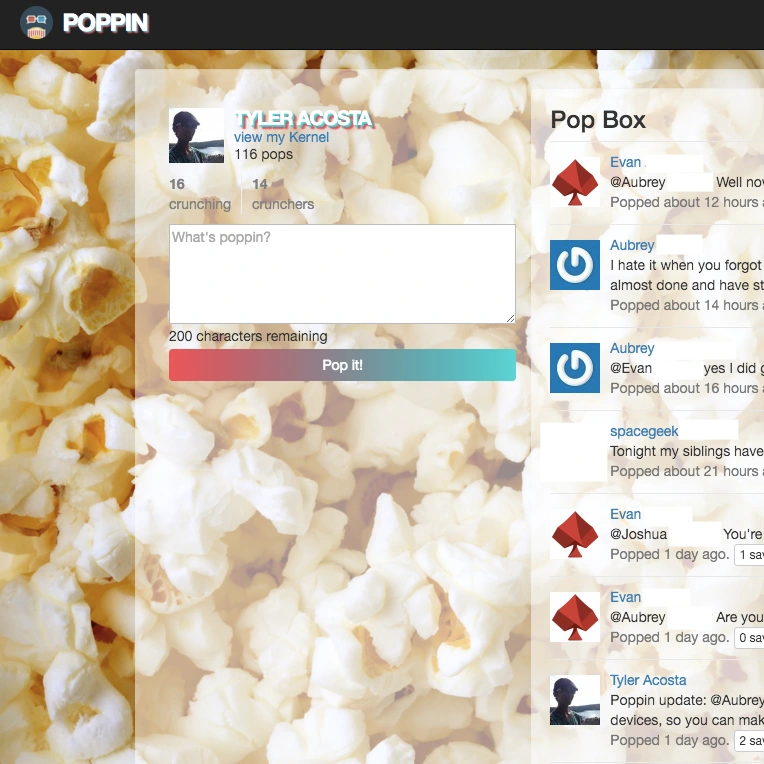
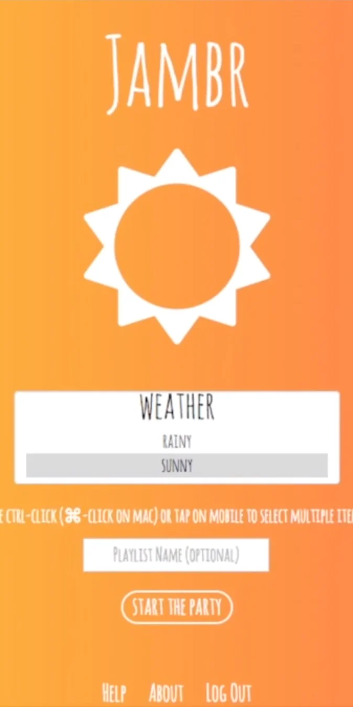
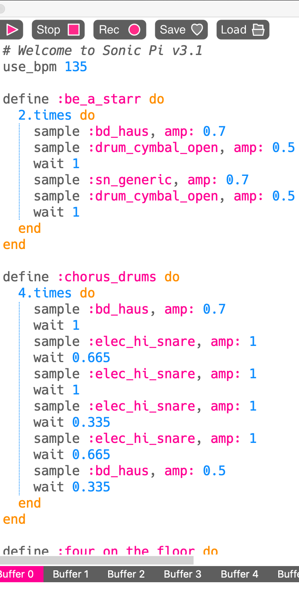
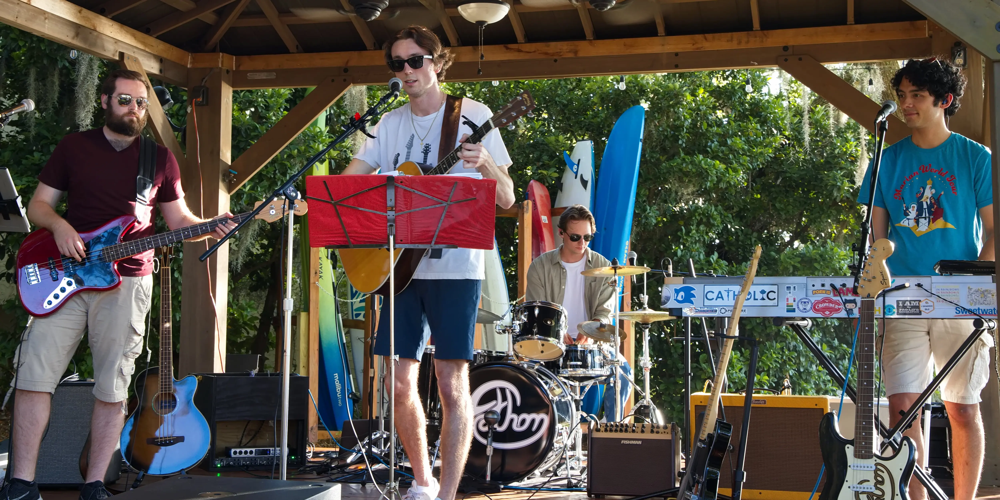

Rhythms of Life is a procedural audio generator that uses Tone.js to represent key signatures, chords, and drum patterns as data structures, then transforms them into songs based on data streams of company success metrics.
It was the summer of 2018. I had started at Cerner as a Software Engineering Intern on the Model Experience team, working alongside 5 teammates to develop and maintain a suite of 5 Ruby on Rails web applications that deliver best practice guidelines for domains and software to clinicians.
It was an exciting surprise to hear that Sam Aaron, creator of Sonic Pi, was giving the keynote presentation and a live coding performance at Cerner’s developer conference that summer. I admire the fun and creative approach Sam is taking to bringing programming to a wider audience, and I’ve had a blast playing around with Sonic Pi. I stuck around afterwards to ask him some questions, and a member of the Cerner Labs team overheard that I had a background in music. He pulled me aside to tell me about an idea his team was working on for the Media Wall.
The Systems of Life Media Wall is the centerpiece in the lobby of Cerner's Innovations Campus. It’s one of the first things employees, clients, and visitors to the campus see and associate with the company. The Cerner Labs team creates animated visualizations for data about the company and its products, with dynamic and eye-catching representations of everything from “how many lives have been saved today by our software” to “how many people made a healthy choice in the cafeteria today.” The team’s latest venture was to implement a soundtrack for the wall. They found some free-use ambient electronic music and had set it to play on loop, but they noticed that it felt generic and got old quickly. This led them to a new idea: why not take the data that they were using to create the visualizations and use it to create the soundtrack? There was only one problem: none of the team members had the music theory background needed to turn data into songs.
That’s where I came in. I was managing my workload well enough that, at the request of the Cerner Labs team, my supervisor allowed me to spend Fridays at the other campus working with them on the soundtrack generator. I had a lot of fun using data structures to model chords as sets of notes, key signatures as sets of chords, and beats as 2D binary arrays of drum patterns for different percussion sounds. The incoming data streams would update each parameter to seamlessly transition into a new song every minute. We configured it so that some values would affect the note or beat patterns, while others would affect the sounds themselves, by picking different drum sounds or adjusting the filter frequency on a synth. Considering every combination of all possible data values and all modifiable parameters, the program is capable of generating over 154 septillion unique 1-minute songs.
On the very last day of my internship, the whole team and I went down to the lobby to deploy our soundtrack generator, dubbing it “Rhythms of Life”. It was exciting to have gotten it working on our laptops; hearing the songs coming from the giant screen in the heart of the building was another thing entirely. It was one of the most exhilarating moments I’ve experienced as a software engineer, and I’m grateful to Cerner and the Cerner Labs team for giving me a chance to combine my music and programming skills to create and deploy something truly unique.
Click or tap the images to view some of the projects I’ve worked on and some of the ways I’ve performed and produced music.
Feel free to reach out if you have any questions, or if you’d like to collaborate.